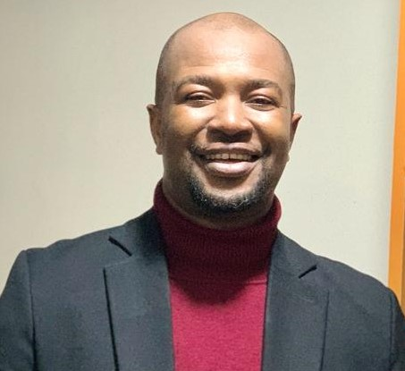

Joseph Monye

Summary
A dedicated philosopher with a profound curiosity about the nature of existence and the complexities of human thought. I Possess a strong analytical mindset needed for critical thinking. I am driven to engage in thought- provoking discussions that challenge conventional wisdom and inspire new perspectives with the quest for deeper knowledge, understanding and the pursuit of truth. I am passionate about leadership and knowledge. A lover of knowledge with great intrest in Tech.
Education
- M.A. Philosophy, Lagos State University, Ojo Nigeria 2020
- Bachelor of Sacred Theology, Pontifical Urbaniana University, Rome 2008
- B.A Philosophy, University of Benin, Benin-City, Nigeria. 2004
Work Experience
PARISH PRIEST - OUR LADY OF THE HOLY ROSARY CATHOLIC CHURCH
October 2019 – Present
- General supervision of different groups in the Parish
- Administration of the Roman Catholic Sacraments such as daily Masses, Baptism, Anointing of the sick, Marriage etc.
- Coordinated and presided over liturgical activities
- Coordinated and supervised workshops, retreats, youth programs, marriage preparations and pastoral counselling
- Coordinated and supervised 10 members of Parish staff
- Coordinated and supervised 27 members of school staff
PARISH PRIEST – OUR LADY SEAT OF WISDOM CATHOLIC CHURCH
October 2014 – October 2019
- Provided spiritual counselling to parishioners on a one-on-one basis as needed
- Supervised the maintenance of church grounds and facilities; budgeted and purchased supplies as necessary
- Provided leadership in the life of the church by setting an example through personal integrity and commitment to Christian values
ASSOCIATE PARISH PRIEST – ST. KIZITO CATHOLIC CHURCH, IJU
January 2011-October2014
- Assisted with administrative tasks related to congregational life
- Coordinated and presided over liturgical activities
- Maintained a knowledge of current issues within the denomination and community that may affect the church’s ministry efforts.
ASSOCIATE PARISH PRIEST – ST. LEO’S CATHOLIC CHURCH, IKOGA ZEBBE
May 2009-January 2011
- Assisted in overseeing building projects, making purchases and budget management
- Assisted with both Pastoral and administrative tasks within the Parish
- Assisted with the administration of the Parish community
VOLUNTARY TEACHING ASSISTANT – LAGOS STATE UNIVERSITY, OJO
October 2019 – June 2020
- Help students grasp foundational and advanced philosophical concepts by explaining theories, ideas, and arguments in a clear and accessible manner.
- Facilitates group discussions, Socratic seminars, and debates where students can exchange ideas, challenge each other's viewpoints, and refine their thoughts through interaction.
- Assist with exam preparation by reviewing key concepts, helping students practice problem- solving, and offering strategies for tackling philosophical questions effectively.
Skills
- Organizational Skills
- Leadership Skills
- Microsoft Office
- Communication Skills
Awards and Certifications
- Honourary Award for Excellence Catholic Youth Organisation of Nigeria December 2014
- Award of Honour The Serra Club International July 2021
- Merit Award Catholic Confraternity of Christian Fathers November 2021
- Splunk Core Certified User 2022
- Splunk Core Certified Power User 2022
- Splunk Enterprise Certified User 2022
- Splunk Enterprise Security Admin 2022
Other
My Hobbies
Contact Me